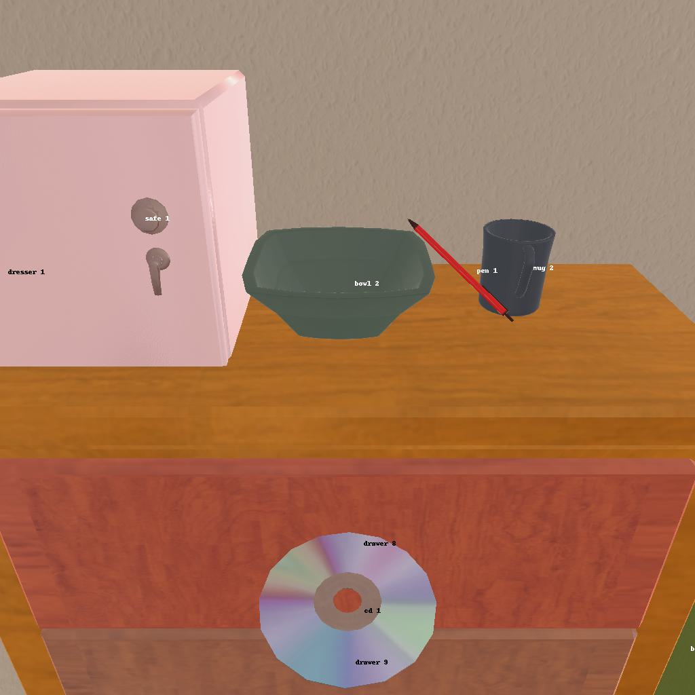

---------------------------------------------------------task: 6---------------------------------------------------------
--------------------------------------------------------------------------------------------------------------------------------------------------------------------
--------------------------------------------------------------------------------------------------------------------------------------------------------------------
Step:--------------------------------------------------------------------------17-------------------------------------------------------------------------------
----------------------------------------
VLM Prompt:
Image1:
**Instruction**
1. Analyze the provided image to identify all visible household objects, focusing on those relevant to the task description "put a cd in safe."
2. Use the analysis of the image and the task hint "The agent must find an object of the desired type, pick it up, find the correct location to place it, and put it down there." to answer the question: what is the most reasonable action in the choices for the task description "put a cd in safe"?
4. Decide and write the answer using the template: The answer is: (i): , where i is the real number. If there is no desired object in the image, search every place based on **Initial Observation** to find the object. And if no one is exactly correct, choose a similar answer.
**Initial Observation**
You are in the middle of a room. Looking quickly around you, you can see bed (1-2), dresser (1), sidetable (1-2), drawer (1-11), desk (1), garbagecan (1), safe (1)
**Answer Choices**
(1): go to bed 1
(2): go to bed 2
(3): go to sidetable 1
(4): go to drawer 1
(5): go to drawer 2
(6): go to sidetable 2
(7): go to drawer 3
(8): go to drawer 4
(9): go to desk 1
(10): go to garbagecan 1
(11): go to drawer 5
(12): go to drawer 6
(13): go to drawer 7
(14): go to drawer 8
(15): go to drawer 9
(16): go to drawer 10
(17): go to drawer 11
(18): go to safe 1
(19): put cd 1 in/on dresser 1
(20): examine dresser 1
**Answer**
Let's think step by step by following the instructions.
----------------------------------------
----------------------------------------
Original Response:
The task is to "put a cd in safe." From the image provided, we can see a cd labeled "cd 1" lying on what seems to be a drawer labeled "drawer 9." The safe is labeled "safe 1" and is also visible in the image.
Based on the task description and the hint provided, the agent must pick up the cd and put it in the safe. The most reasonable action from the choices given would be to first go to the location of the cd.
The answer is: (15): go to drawer 9.
----------------------------------------
----------------------------------------
>>> Refine Original VLM Response and Get Pure Action: go to drawer 9
----------------------------------------
-----------------------------------------------------------------
Running time: 8.07181191444397 seconds
Total Money: 1.9449900000000002
-----------------------------------------------------------------
-----------------------------------------------------------------
Text Observation:You arrive at loc 15. The drawer 9 is closed.
-----------------------------------------------------------------
UNSUCCEED